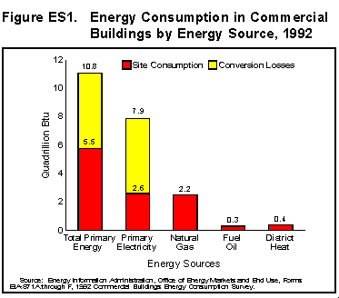

1992 Consumption & Expenditures
Executive Summary
Commercial Buildings Energy Consumption and Expenditures 1992 presents
statistics about the amount of energy consumed in commercial buildings and the
corresponding expenditures for that energy. These data are based on the 1992
Commercial Buildings Energy Consumption Survey (CBECS), a national energy survey
of buildings in the commercial sector, conducted by the Energy Information Administration
(EIA) of the U.S. Department of Energy.

- Energy Consumption: In 1992, the 4.8 million commercial buildings
in the United States consumed 5.5 quadrillion Btu of electricity, natural
gas, fuel oil, and district heat. Of those 5.5 quadrillion Btu, consumption
of site electricity accounted for 2.6 quadrillion Btu, or 48.0 percent, and
consumption of natural gas accounted for 2.2 quadrillion Btu, or 39.6 percent.
Fuel oil consumption made up 0.3 quadrillion Btu, or 4.0 percent of the total,
while consumption of district heat made up 0.4 quadrillion Btu, or 7.9 percent
of energy consumption in that sector. When the energy losses that occur at
the electricity generating plants are included, the overall energy consumed
by commercial buildings increases to about 10.8 quadrillion Btu (Figure ES1).
- Energy Expenditures:Expenditures for the 5.8 Btu of energy consumed
in the commercial buildings sector totalled $71.8 billion. By energy source,
$57.6 billion was spent for site electricity, $9.9 billion was spent for natural
gas, $1.4 billion was spent for fuel oil, and $2.9 billion was spent for district
heat.
- Location: By Census region, the South accounted for about 33 percent
of the total 5.5 quadrillion Btu of energy consumption by commercial buildings.
Of that total, buildings in the Midwest consumed 29 percent, while buildings
in the Northeast and West consumed 20 percent and 18 percent, respectively.
- Energy Intensities: Energy consumption per square foot of building
floorspace, or energy intensity, provides a common basis to compare data on
energy consumption for different building categories and energy sources. For
example, among the major energy sources, fuel oil consumption produced the
lowest energy intensity at 21 thousand Btu per square foot. Consumption of
natural gas and electricity produced energy intensities of 48 thousand Btu
per square foot and 39 thousand Btu per square foot, respectively.Consumption
of district heat produced the highest energy intensity at 83 thousand Btu
per square foot.
- Energy Intensities by Location: Electricity intensities were higher
in the West and South Census regions (12.6 kilowatthours per square foot)
than in the Midwest and Northeast regions (10.1 kilowatthours per square foot),
primarily due to greater use of air conditioning in those regions. The natural
gas intensity was higher in the Midwest (52.7 cubic feet per square foot)
than in the Northeast, primarily due to its use in the Midwest for space heating.
The Northeast consumed 71 percent of the fuel oil used in the commercial buildings
sector, mostly for main space heating.
- Principal Building Activity: Office buildings consumed more total
energy (1,247 trillion Btu), more electricity (206 billion kilowatthours),
and more natural gas (377 billion cubic feet) than was consumed by commercial
buildings used for any other principal activity, primarily because they accounted
for more commercial floorspace than did buildings of most other activities.
However, buildings in which the principal activity was either food sales or
food service were, by far, the most electricity-intensive buildings (43.6
kilowatthours per square foot and 27 kilowatthours per square foot, respectively)
partly due to use of more refrigeration equipment. Food service buildings
also showed the highest natural gas intensity (133 cubic feet per square foot).
probably because of their smaller size and longer weekly operating hours.
- Other Energy Sources: CBECS data on the consumption of other energy
sources by commercial buildings revealed that buildings using wood tended
to use the major energy sources less intensively (34.6 thousand Btu per square
foot compared with the national average of 81 thousand Btu per square foot),
while buildings using solar energy or passive solar features used the major
energy sources more intensively (94.4 thousand Btu per square foot).
- Natural Gas Transported for the Account of Others: Natural gas transported
for the account of others is natural gas that customers buy directly from
a gas producer or broker and which the local distributing company delivers
to the building. Natural gas bought under this purchasing arrangement is a
small but growing portion of all natural gas consumed in the commercial buildings
sector. In 1992, natural gas transported for the account of others made up
approximately 13 percent of natural gas consumption in the commercial buildings
sector; in 1989, it accounted for 12 percent of natural gas consumption.
View and/or
Print Full Report

 

File Last Modified: April 7, 1997
- Contact:
- Joelle Michaels
- joelle.michaels@eia.doe.gov
- CBECS Manager
-
URL: http://www.eia.gov/consumption/commercial/data/archive/cbecs/cbecs2b.htm
If you are having any technical problems with this site, please contact the
EIA Webmaster at wmaster@eia.doe.gov
|